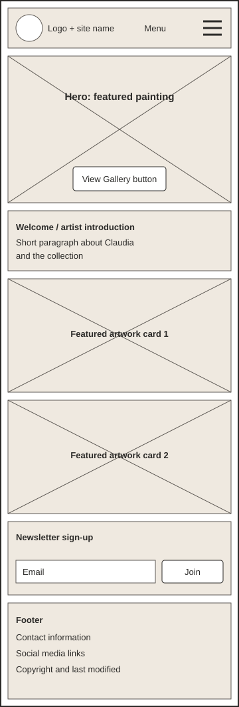
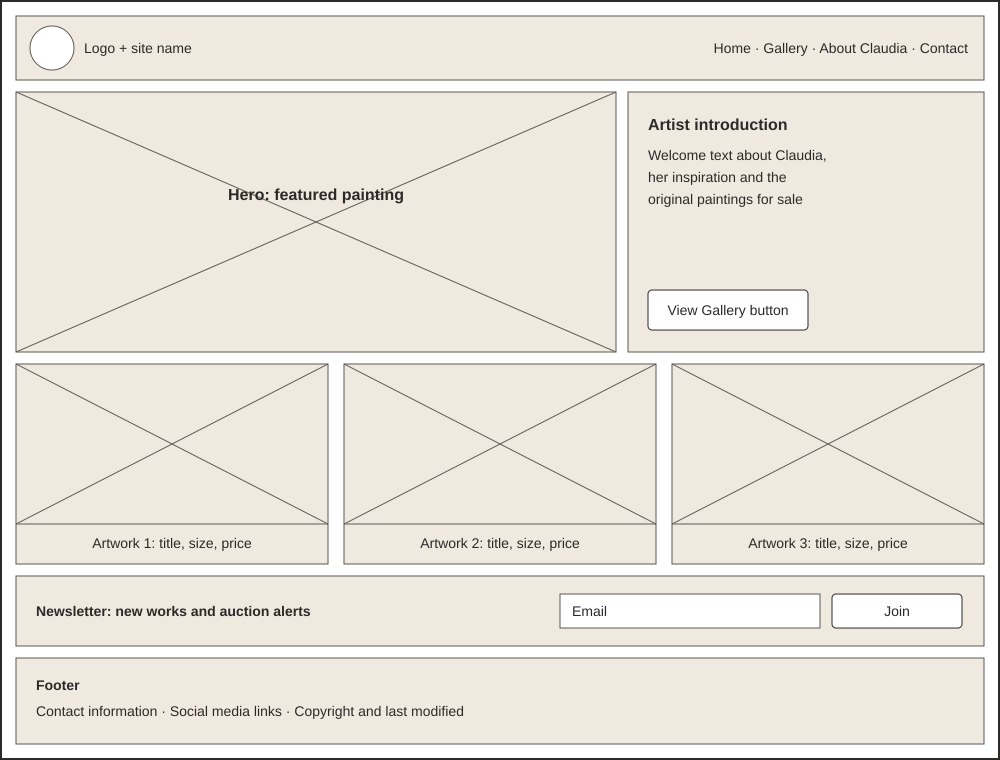

Site Name
Arte Claudia combines the Spanish word for art, arte, with the name of the artist, Claudia. The name is short, easy to remember and presents the site as the personal gallery of one artist, which helps build her brand. The logo above shows the Andes mountains under a golden sun, a reference to the landscapes that inspire Claudia, and will appear in the header of every page.
Possible domain: arteclaudia.art
Site Purpose
The site is an online gallery that presents and sells original paintings by Claudia to collectors, interior decorators, hotels, restaurants and art lovers around the world. It provides a gallery of paintings organized by category with the size, technique and price of each work, the story of the artist, answers to common buying questions, and a form to ask about a painting or request a commission. Visitors can also leave their email to be notified only when new paintings or auctions are available.
In a second stage, the site will add online purchases and auctions, and it will be available in Spanish and Portuguese as well as English.
Scenarios
- Which paintings are available, and what are their sizes and prices?
- Can I see only the landscape paintings to match my client's office?
- Does each painting include a certificate of authenticity?
- How can I commission a custom painting for my restaurant?
Color Schema
#2B2A28Header, footer, paragraph text#FAF7F2Page background#823D22Headings, buttons, links#D8B566Accents, borders, text on dark
Typography
- Cormorant Garamond Site name, headings, artwork titles
- Lato Paragraphs, navigation, forms, prices, buttons
Wireframes
Home page layout. The mobile view stacks the content in one column with a menu button. The desktop view places the hero painting next to the artist introduction and shows three artworks in a row.

